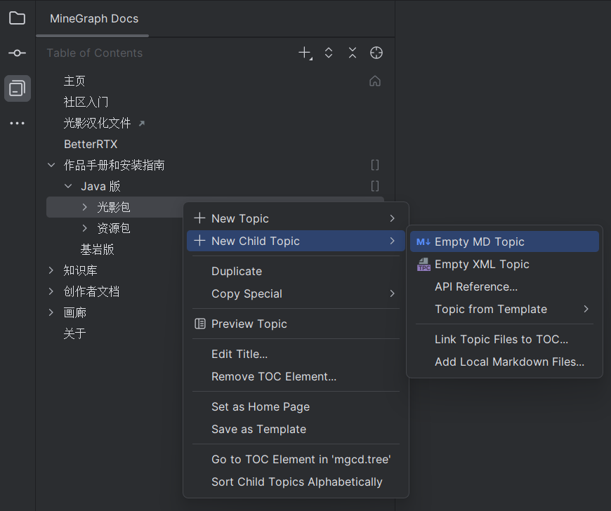
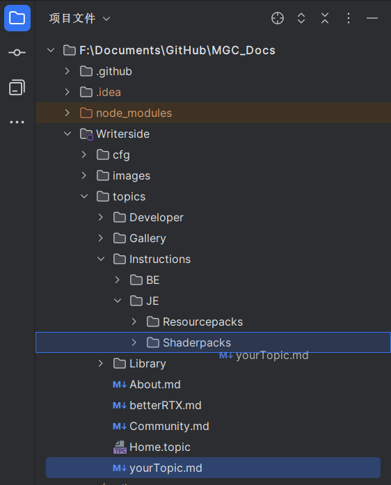

Writerside 写作参考
常用格式速查
========================
标题
========================
索引深度
========================
环绕插入行内代码 框选内容, CtrlAltT, T
环绕插入代码块 框选内容, CtrlAltT, B
========================
斜体 CtrlI
或
========================
粗体 CtrlB
或
========================
粗斜体
或
或
...
========================
删除线 CtrlShiftS
========================
行内代码块 CtrlShiftC
========================
链接 CtrlShiftU
或
========================
角标
========================
按键
========================
- 术语
- 标题 : 内容
========================
========================
========================
缩写
========================
无序步骤
========================
有序步骤
========================
步骤块
========================
新起
段落
========================
不新起段落
仅换行
========================
表 |
|---|
格 |
========================
使用 group 和 group-key 同步切换标签页，当 group 和 group-key 值相同时，选项卡将会同步切换：
渲染结果：
内容A
内容B
内容C
内容D
========================
复用块
变量
在定义的复用块中任意位置使用
%变量名%在调用复用块的文档中使用
<var name="变量名，和复用块中一致" value="不包含任何xml/md格式的文本"/>试图在%fVar%使用%lang%语法。
试图在**这里**使用md语法。
试图在**这里**使用md语法。
目前我们的复用块全部保存于 topics/contentsLibrary.md ，如果你需要调用复用块，请访问该文件。
添加新的复用块（请添加到 contentsLibrary.md 以便管理）
========================
可折叠块
xml 代码注意事项
如果你使用了 xml 代码，你需要空一行才能继续 markdown 格式。
渲染结果：
这段话**不能**正常使用 `markdown 格式` 。
这段话可以正常使用 markdown 格式。
快捷键
文件内定位章节 CtrlF12
重命名文件 ShiftF6
文件内搜索 CtrlF
全局搜索 Shift, Shift
添加新文件
在
Writerside侧栏的正确目录下创建 Topic 在
项目侧栏将你的文档文件移入对应的文件夹